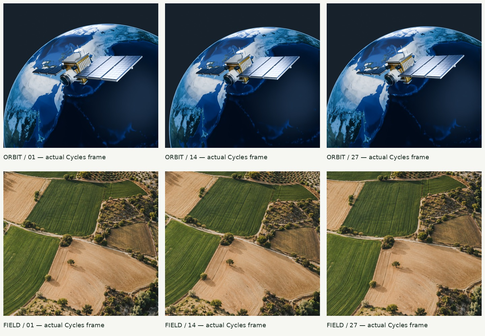

AGROMAX / ORBITALUydu gözleminden
tarımsal içgörüye.
Özgün gözlem uydusu ve sürekli tarımsal arazi yüzeyi. Aşağıdaki altı görüntü, gerçek Cycles kamera sekanslarından alınmıştır; hazır hareketli görsel veya sahte analiz çıktısı değildir.

Sekiz konsept ve sanat yönetimi · Gerçek prodüksiyon dosyaları · Kaynak ve kullanım hakları